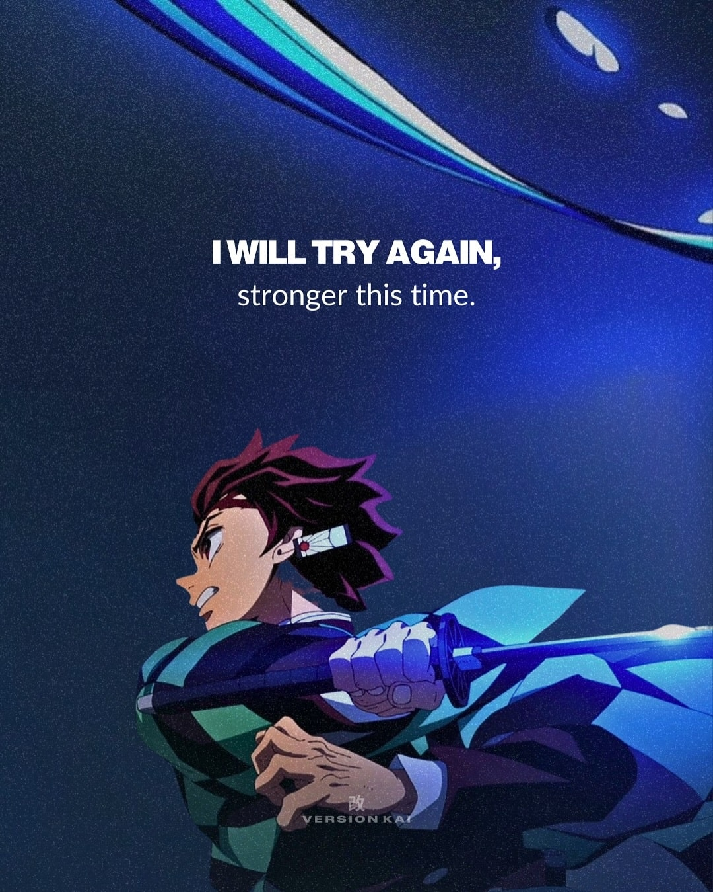

Welcome to Penguin Projects

KAMADO TANJIRO
This is Kamado Tanjiro.
A Hashira-level demon slayer.
He weilds a black colored Katana.
He uses both fire and water breathing.
- Loves his sister.
- Respectful to everyone.
- Has sympathy even for demons.